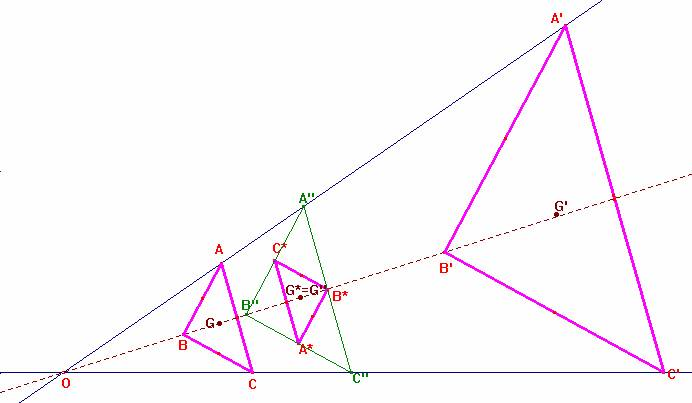

Problema 104.-
Sean ABC y A'B'C' dos triángulos homotéticos en posición de Thales (lados homólogos paralelos).
Definimos los puntos A* B* C* como los de intersección de los pares de rectas BC' y B'C, AC' y A'C, y AB' y A'B respectivamente.
Demostrar que el triángulo A* B* C* es homotético a los dos triángulos anteriores y que los centros de gravedad o baricentros de los tres triángulos son colineales, es decir, están alineados.
Propuesto por su autor, el profesor Romero Márquez J.B., Colaborador de la Universidad de Valladolid.
Romero, J.B. Crux Mathematicorum. Problem 1480
Solución de F. Damián Aranda Ballesteros profesor de Matemáticas del IES Blas Infante en Córdoba (5 de julio de 2003)

El hecho geométrico que destaca en esta construcción es el siguiente.
Una vez dados los dos triángulos homotéticos en posición de Thales, resulta que los puntos A*, B* y C* del enunciado no son otros que los puntos medios de los segmentos que son medias armónicas de las bases de los trapecios formados por los lados homólogos paralelos. Por tanto el triángulo A*B*C* es el triángulo medial del triángulo formado A''B''C''. Como quiera que este último es homotético a los dos primeros, su medial también lo será por tanto. Además como el baricentro de un triángulo y el de su medial es el mismo entonces los centros de gravedad de los triángulos ABC, A'B'C' y A*B*C* son colineales.
Saludos de F. Damián Aranda Ballesteros.